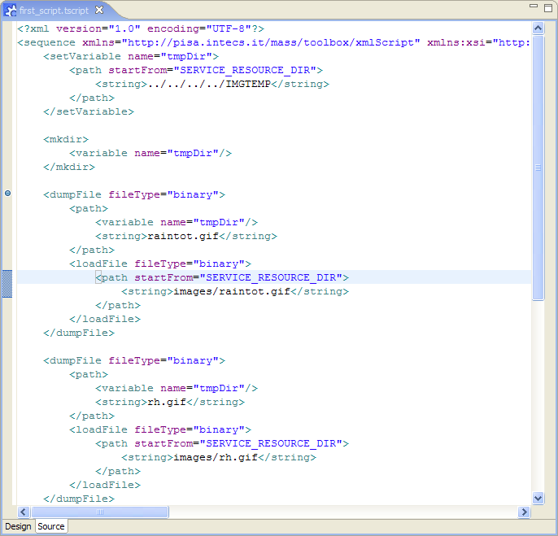

To add a breakpoint double-click on the gray column on the left of the editor, at the level of the tag where a stop of the execution is requested. When done, a blue bullet is shown.

To remove a breakpoint, double click on the breakpoint marker.